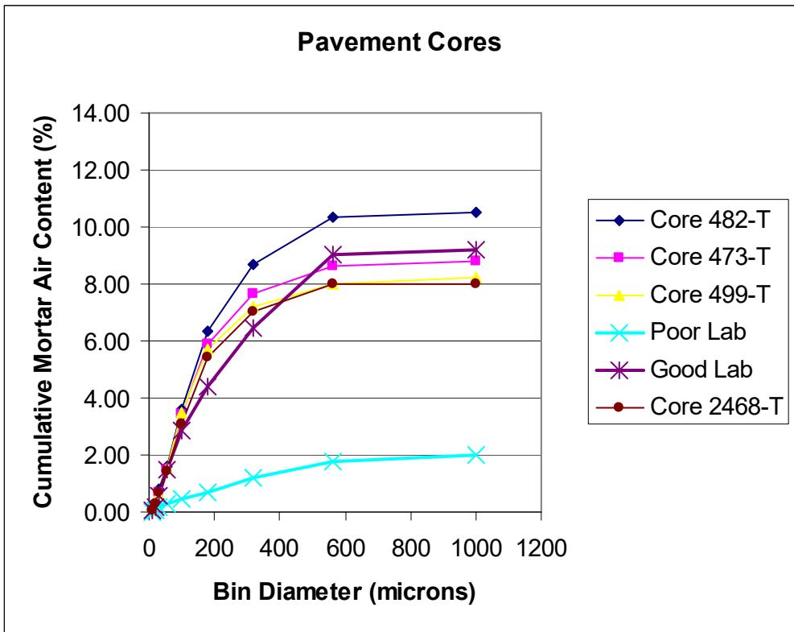
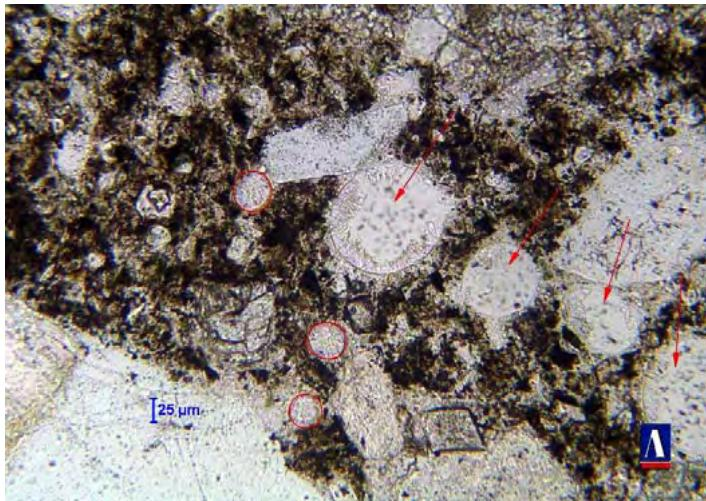
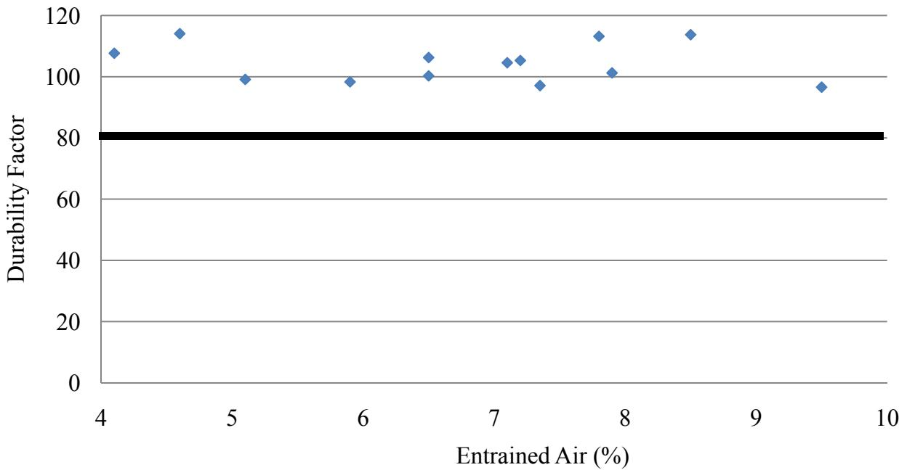
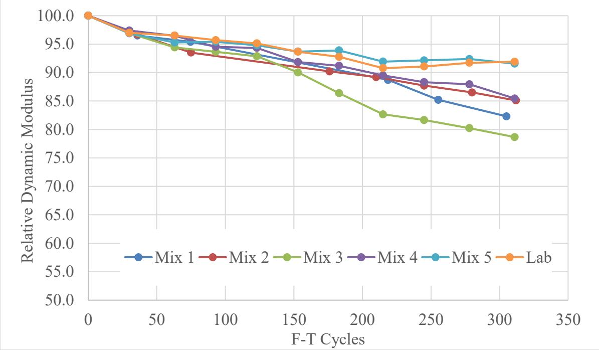
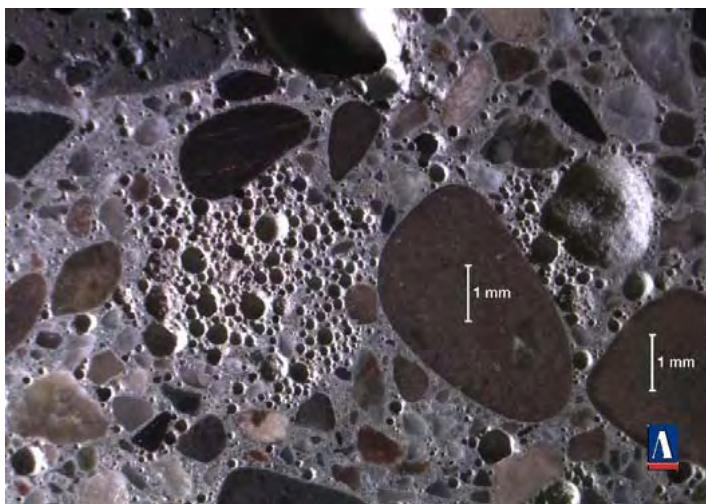
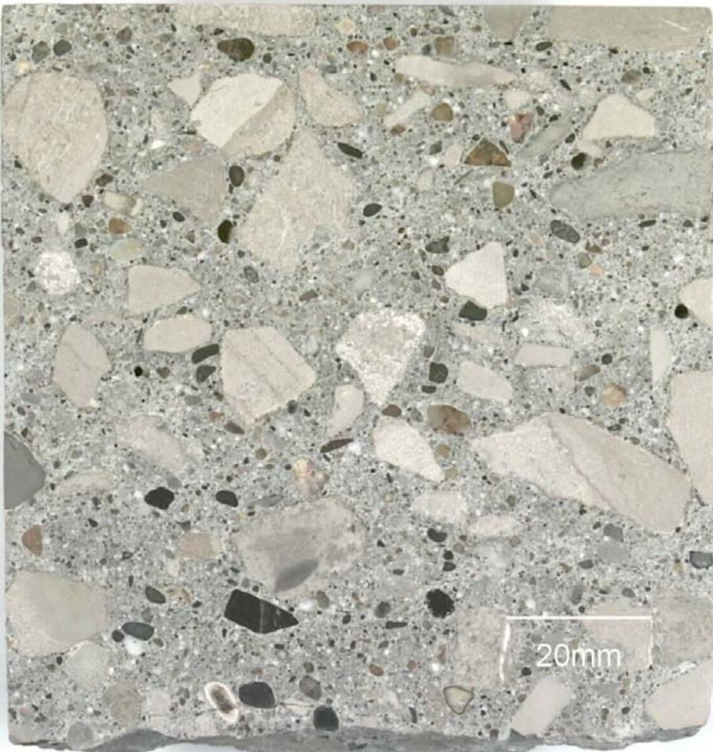
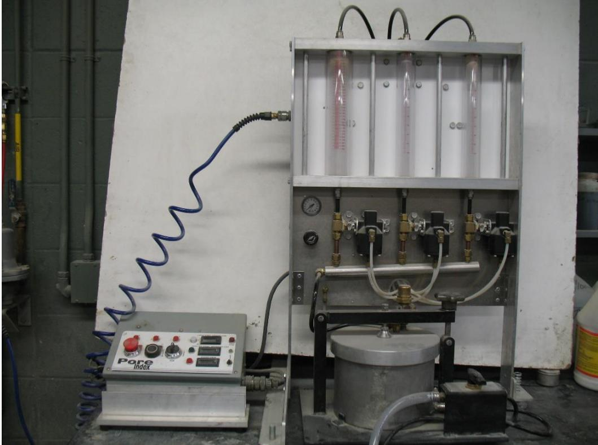
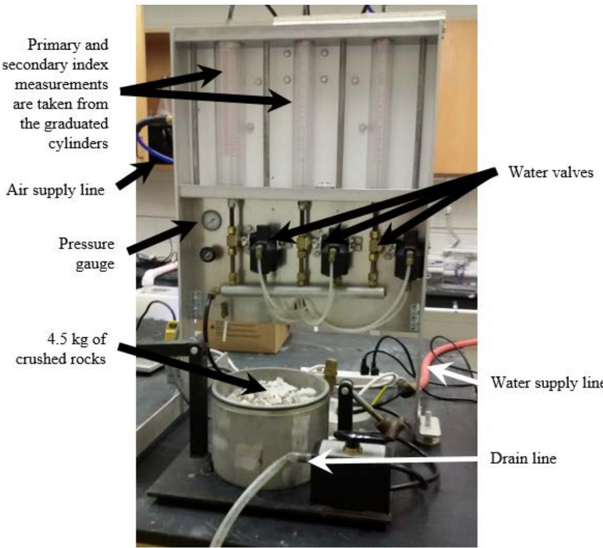
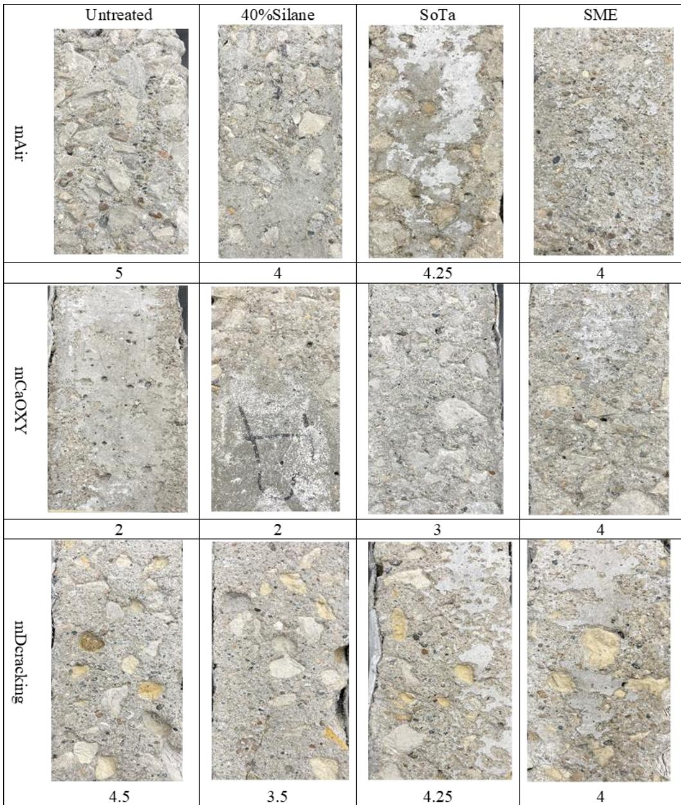
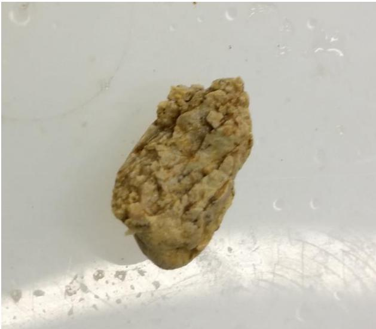

Freeze-Thaw Durability
Freeze-Thaw Durability is a key property within the category of Durability & Materials-Related Distress, defined as the ability of concrete to withstand repeated cycles of freezing and thawing without significant deterioration. It is quantified by measuring the relative dynamic modulus of elasticity after exposing specimens to rapid freezing and thawing cycles in accordance with ASTM C666 Procedure A or B [20], a method that evaluates how well concrete maintains its structural integrity under repeated freeze-thaw stress [18]. This durability aspect is a central mechanism in Premature Joint Deterioration in concrete pavements. Key requirements include an adequate air-void system and low permeability. [1] Penetrating sealers can extend concrete service life by reducing moisture saturation and chloride ion penetration, thereby delaying the onset of freeze-thaw damage mechanisms such as oxychloride formation and saturated frost cracking. [2] Silane-based sealers function as pore liners that facilitate water release but may result in slower desaturation rates compared to other treatments, while silicate-modified epoxy (SME) sealers act as pore blockers that further retard moisture evaporation. [2] Desaturation testing serves as a viable alternative to air permeability tests for evaluating sealer performance, as air permeability measurements do not correlate well with the drying and desaturation characteristics of sealed concrete. [2] ASTM C672 and the BNQ NQ 2621-900 are distinct laboratory test methods for evaluating scaling resistance, with the latter serving as an alternative to the former due to issues with the standard’s aggressiveness toward concretes containing supplementary cementitious materials. Deicing Salt Effects act as a critical tipping point that alters fluid properties and transport mechanisms, while One-Dimensional Freezing provides a specific laboratory configuration where freezing occurs only from the top surface. Degree of Saturation represents the physical state of water in concrete pores, where reaching a critical threshold triggers deterioration, contrasting with the procedural nature of the testing standards.
Sources (31)
Sub-concepts (5)
Key Parameters
- Air content — minimum 5% entrained air for freeze-thaw resistance; air voids can be compromised by Ettringite Fill
- Spacing factor — should be below 0.008 in. (0.2 mm) for severe exposure; the distressed cores often had adequate original spacing factors but were compromised
- w/cm — should be below 0.40 to limit permeability and saturation
- Degree of saturation — critical; distress occurs only in saturated or near-saturated concrete
Cumulative void-size distribution curves plotting above the ‘good’ curve indicate adequate freeze-thaw durability when durable aggregates are used, while curves below this threshold signify a deficiency in entrained air voids. [3]
A cumulative mortar air content of at least 6% is required when a bin size of 316 microns is reached to ensure adequate freeze-thaw protection. [3]
Entrapped-air voids in the 500 to 1000 micron range do not protect concrete from frost damage but can artificially inflate total air content measurements. [3]

Hardened air content of cores extracted from Site 5 (T = top) [3]The segment of the cumulative void distribution curve between 500 and 1000 microns indicates the volume of small entrapped-air voids present in the specimen. [3]
The presence of ettringite within air voids can compromise the protective air-void system by reducing available volume for pressure relief, even though ettringite itself is not typically considered an expansive mechanism. [4]

igure 11. Ettringite-filled air voidsF [4]High water-cement ratios exceeding 0.50 significantly reduce freeze-thaw resistance, leading to extensive cracking and deterioration compared to properly proportioned concrete. [4]
 High water-cement ratio and cracking left half of the cold joint [4]
High water-cement ratio and cracking left half of the cold joint [4]
Rapid freeze-thaw testing using ASTM C666 Method A shows that all tested ternary mixture designs with entrained air volumes greater than 4% provided sufficient durability, with some specimens gaining strength during the 300 cycles to achieve a durability factor exceeding 100. [5]

Durability factor association for entrained air volumes [5]Specimens subjected to rapid freeze-thaw testing can exhibit dynamic modulus readings between 80 and 120 for Type I cement mixtures, while blended cement mixtures show a slightly wider range of 75 to 130, though most readings still cluster around 100±5. [5]
A spacing factor of 0.20 mm or less measured using microscopical methods serves as a specific indication of good concrete freeze-thaw resistance. [6]
A durability factor of 85 percent serves as the threshold for good freeze-thaw resistance, and mixes exhibiting marginal durability factors near this level often correspond to low specific surface and high spacing factors measured via rapid air testing. [7]

F-T durability results [7]Secondary ettringite deposition can fill the smallest air voids in concrete paste adjacent to joints, reducing entrained air volume and increasing spacing factor beyond acceptable limits for freeze-thaw resistance. For example, infilling reduced entrained-sized void space from 5.4% to 3.5% and pushed spacing factors from 0.005” to 0.009” in one core sample. [1]
The infilling by ettringite occurs during saturation with deicer solutions and does not require prior distress, allowing progressive freeze-thaw deterioration at joints where poor drainage maintains constant moisture supply. This mechanism can compromise originally well-designed air void systems in concrete that was initially resistant to severe exposure conditions. [1]
In distressed joint cores, secondary ettringite with portlandite can fill smaller entrained-sized void spaces within approximately 10-20mm of the joint plane, rendering that layer non-durable while deeper concrete remains unaffected. Actual measured air void parameters in this compromised zone show significant reductions in entrained volume and increases in spacing factor compared to original design values. [1]
 #2 DESCRIPTION: Much of the finer air voidspaces in the concrete paste, proximate to the joint distress and at 55mm depth in the core, are filled with secondary ettringite 5x [1]
#2 DESCRIPTION: Much of the finer air voidspaces in the concrete paste, proximate to the joint distress and at 55mm depth in the core, are filled with secondary ettringite 5x [1]
Achieving low permeability without air entrainment requires careful aggregate selection, extended moist-curing periods to increase hydration degree, and supplementary cementitious materials like silica fume [8].
Secondary ettringite formation can infill fine air void spaces near joints, reducing entrained air content from 5.4% to 3.5% and increasing the spacing factor from 0.127 mm to 0.229 mm in concrete adjacent to joint cracks, a degradation that compromises freeze-thaw resistance by eliminating the pressure-relief capacity of the air-void system [1].
Case Study: Southeast Michigan Air Void Deficiencies
A 2006 forensic study of twelve concrete pavement projects found:
- Only 22% of cores had an adequate, well-developed air system
- 39% had inadequate bubble spacing factor (above 0.008 in.)
- 22% showed uneven air bubble distribution
- 13% displayed clumping or coalescing of air bubbles — associated with non-vinsol resin air-entraining admixtures and dry absorptive slag aggregate
- All cores with total air content >6% had acceptable spacing factor, supporting a recommendation to raise minimum specified air content [4]
Air bubble coalescence can occur when non-vinsol resin air-entraining admixtures accumulate on dry, absorptive aggregate surfaces due to water movement during mixing. [4]

Air bubble coalescence in Core 6 [4]Field inspections after two winters confirmed that properly proportioned ternary mixtures can exhibit no scaling or freeze-thaw damage, validating their durability in service conditions. [6]
Material loss concentrates primarily in the cement paste near the saturated zone, leaving coarse aggregate particles clean and intact. [1]
 Cracks concentrated adjacent to the coarse aggregate in FG1 [1]
Cracks concentrated adjacent to the coarse aggregate in FG1 [1]
Field Scaling Study Results
Field Scaling Study (Schlorholtz & Hooton 2008)
- Hardened air content across all cores: 3.5–7.1% (APS), 3.7–11.1% (ISU SEM image analysis)
- Spacing factors mostly ≤0.008 in., indicating adequate freeze-thaw protection [9]
Wang et al. 2009 — Low-Permeability Concrete F-T Study
A comprehensive investigation of 16 concrete mixes (Type I + fly ash and Type IP cements, w/b 0.25–0.55) found:
Key Findings
- All AEA concrete with air > 6% had DF > 85% — air entrainment remains the most reliable protection
- Only one non-AEA mix achieved F-T durability: IP25 (Type IP, w/b=0.25, 12,760 psi, 520 coulombs) — DF = 94%
- Low permeability alone is insufficient — must be combined with very high strength
- Limiting w/b for non-AEA durability: 0.26 (IP) and 0.19 (I-FA) — neither is practical for field construction
Air Void Criteria for AEA Concrete
Power-Law Relationships (non-AEA concrete only)
- DF = a·(porosity)^(-b), DF = a·(permeability)^(-b), DF = a·(w/b)^(-b), DF = a·(strength)^(b)
- These relationships do not exist for air-entrained concrete — the air void system dominates [8]
The limiting water-to-binder ratio for non-air-entrained Type I cement with Class C fly ash concrete to achieve freeze-thaw durability is 0.19, a value that is not attainable in field construction. [8]
Air entrainment effectiveness is considered adequate when the durability factor remains at or above 85%, which corresponds to an air content greater than 6% and a spacing factor of 0.2 mm or less. [8]
 Relationship between durability factor and % air and spacing factor of air entrained samples, obtained by RapidAir [8]
Relationship between durability factor and % air and spacing factor of air entrained samples, obtained by RapidAir [8]
IP cement mixtures exhibit less stable air entrainment, with pressure method measurements ranging from 6% to 8%, while AVA and RapidAir measurements showed wider variability from 2.8% to 9.3% and 6.24% to 9.1%, respectively. [8]
Phase 2 Deicer Scaling Test Methods Study (Hooton & Vassilev 2012)
A comprehensive laboratory evaluation of three scaling test methods for slag cement concretes added important findings to freeze-thaw durability knowledge:
- w/cm ratio is the dominant factor: reducing w/cm from 0.42 to 0.38 produced the most significant improvement in scaling resistance — all slabs with w/cm 0.38 passed mass loss limits regardless of slag content or test method [10]
- Air content alone insufficient at 50% slag: even with good spacing factors (<0.25 mm), high-slag mixes showed severe scaling, indicating the pore structure of slag concrete interacts with freeze-thaw damage mechanisms
- No direct relationship between RCPT and scaling: 50% slag mixes had the lowest coulomb values but the highest scaling — contradicting the assumption that low permeability guarantees freeze-thaw durability [10]
- ASTM C672 vs. BNQ results differ fundamentally: the test method itself influences conclusions about slag concrete durability — suggesting that standard test methods need revision for modern SCM concretes
The BNQ NQ 2621-900 test method, developed by the Quebec Ministry of Transportation, provides results that better mimic field performance than ASTM C672 when evaluating slag cements. [10]
 ASTM C672 exposure for Mix #13 (50%LA 50%SG120 0.42w/c) at 25 cycles where coarser sized pieces of scale were observed [10]
ASTM C672 exposure for Mix #13 (50%LA 50%SG120 0.42w/c) at 25 cycles where coarser sized pieces of scale were observed [10]
The RILEM TC 117-FDC/CDF test method developed in Germany is another standard procedure used to determine susceptibility of concretes exposed to deicers and freeze-thaw environments. [10]
The Swedish Standard SS 13 72 44, also known as the Borås test method, is utilized to evaluate scaling resistance of concrete surfaces exposed to deicing chemicals. [10]
The MTO LS-412 is a laboratory testing manual method used in Ontario to evaluate scaling resistance of concrete surfaces exposed to deicing chemicals. [10]
Aggregate Pore Structure Study
A 2015 MnDOT-sponsored study investigated the relationship between aggregate pore structure and freeze-thaw durability:
- Iowa Pore Index test effectively distinguished between carbonate and non-carbonate aggregates [11]
- Carbonate aggregates generally exhibited finer pore structures with higher PPI (106-1127 mmHg) and SPI (307-1327 mmHg) [11]
- Mercury intrusion porosimetry confirmed finer pore structures in carbonate aggregates (median diameter 0.01-0.5 μm vs. 0.5-4.5 μm for non-carbonate) [11]
- No significant relationship found between carbonate content and pore structure parameters — suggesting that composition alone may not predict freeze-thaw durability [11]
- Absorption alone insufficient as acceptance criterion; some low-carbonate aggregates exceeded the 1.75% absorption limit [11]
Petrographic examination can distinguish between paste fraction distress caused by poor construction practices and aggregate deterioration resulting from freeze-thaw failure. [12]

Bottom of Core 3 (joint) [12]Aggregates with intermediate permeability are the most susceptible to frost damage because they contain a significant portion of small pores (≤500 nanometers) that easily saturate and hold water, preventing expulsion during freezing. This pore structure creates internal pressure that exceeds the aggregate’s elastic limit, leading to fracture. [11]
Pavement slabs are particularly vulnerable at joints and bottoms where moisture exposure is high, often leading to bottom-up cracking that manifests first at the intersection of transverse and longitudinal joints. [11]
 Frost Damage Associated with Concrete Aggregate: D-cracking at a Pavement Joint Intersection (left) and Fractured Carbonate Aggregate (right) [11]
Frost Damage Associated with Concrete Aggregate: D-cracking at a Pavement Joint Intersection (left) and Fractured Carbonate Aggregate (right) [11]
Reducing the maximum aggregate size can limit or eliminate frost damage because unfrozen water in smaller particles can be expelled quickly without developing damaging pressure. However, no single critical size exists for all aggregates as freeze-thaw damage depends on the freezing rate, degree of saturation, and permeability. [11]
The Iowa Pore Index test evaluates fine pores closely related to freeze-thaw durability by measuring pore structure characteristics. This simple and rapid test provides insight into aggregate properties that affect frost resistance, particularly for distinguishing between carbonate and non-carbonate aggregates. [11]
 Results of the Iowa Pore Index Test—Primary Pore Index [11]
Results of the Iowa Pore Index Test—Primary Pore Index [11]
Absorption measurements alone are insufficient for predicting freeze-thaw durability because they do not capture capillary pore size and distribution characteristics critical for deicing chemical reactions. Different degrees of absorption reflect different pore structures, with fine-pored aggregates reaching high saturation much more rapidly than coarse-pored ones even at identical porosity levels. [11]
The amount of water that enters the aggregate in the first minute is called the primary load, reflecting large voids (macropores), while the secondary load measured over the following 14 minutes reflects small voids (micropores) closely associated with freezing-thawing durability. [13]

Iowa pore index apparatus [13]Elevated sulfur content from pyrite and manganese are particularly detrimental to dolostone durability, while strontium content exceeding 0.050% is harmful to limestone durability as identified through X-ray fluorescence analysis. [14]
The Iowa Pore Index test requires only water and air as consumables, making it nondestructive and environmentally safe compared to mercury intrusion methods, while each test takes approximately 30 minutes to complete on a 4.5 kg sample. [14]

Iowa Pore Index apparatus [14]The third-generation Iowa Pore Index (3G IPI) device measures incremental water intrusion at variable pressures up to 70 psi (480 kPa), revealing that the transition point between macropore and micropore intrusion is sample-dependent based on lithological properties rather than a fixed time interval. This method allows for more individualized durability predictions by analyzing cumulative volume data from the first five minutes of intrusion, where dolostones and limestones with elevated primary loads are distinguished from less macroporous sources. [15]
Recycled concrete aggregate samples demonstrate lower permeability, lower strength, and lower resistance to particle degradation compared to limestone and gravel. [16]
Scaling mechanisms can involve the progressive deterioration of aggregate particles, which leads to pop-outs where the surrounding paste matrix remains relatively intact rather than experiencing uniform surface scaling [2].

Scaling evaluation of specimens [2]The formation of expansive products, such as Friedel’s salt or ettringite, can accelerate damage by reacting with hydrated cement compositions after concrete absorbs brine during testing [2].
The degree of saturation within aggregates is a primary determinant of internal stress during freezing, with the magnitude of this stress depending on the aggregate’s porosity, permeability, and particle size [17].
The degree of saturation serves as a critical threshold property that governs freeze-thaw durability, with aggregates attaining higher saturation levels being most susceptible to failure [11]. This susceptibility is driven by aggregate pore structure, where smaller pores retain water more effectively than larger ones, thereby increasing the risk of damage during freezing cycles [11]. Consequently, the specific degree of saturation reached within these pores determines whether freeze-thaw damage will occur in concrete pavement joints [1].
For concrete pavements, freeze-thaw damage can only initiate once a specific threshold is reached: the critical degree of saturation for aggregate particles, which is defined as 91.7% [11].
 Reprinted, with permission from “Influence of Physical Characteristics of Aggregates on Frost Resistance of Concrete.” Proceedings of the American Society for Testing Materials, 60, 1063–1079, copyright ASTM International, 100 Barr Harbor Drive, West Conshohocken, PA 19428. Figure 2.2. Degree of Saturation Attained by Different Aggregates at Various Humidities [11]
Reprinted, with permission from “Influence of Physical Characteristics of Aggregates on Frost Resistance of Concrete.” Proceedings of the American Society for Testing Materials, 60, 1063–1079, copyright ASTM International, 100 Barr Harbor Drive, West Conshohocken, PA 19428. Figure 2.2. Degree of Saturation Attained by Different Aggregates at Various Humidities [11]
Aggregates with fine pore structures, such as trap rock, reach high degrees of saturation much more rapidly than those with coarse pore structures like dolomite, even when both have identical total porosity [11].
 Pore Size Distribution of Aggregates Studied (C: Carbonate, NC: Non-Carbonate) [11]
Pore Size Distribution of Aggregates Studied (C: Carbonate, NC: Non-Carbonate) [11]
Specifically, aggregates containing fine pores smaller than 500 nanometers can become critically saturated easily due to strong capillary forces, yet the water within these pores is difficult to expel during freezing, leading to internal pressure and particle fracture [11].
While water trapped in pore sizes ranging from 0.1 to 10 micrometers exhibits difficulty escaping during freeze-thaw cycles, aggregates with larger pores exceeding 10 micrometers are generally considered frost-resistant [11].
Intermediate-permeability aggregates contain a significant portion of small pores (≤ 500 nanometers) where capillary forces cause easy saturation; at certain freezing rates, water cannot move out and develops internal pressure high enough to fracture the particle, whereas high-permeability aggregates mostly contain large pores that permit easy water movement, allowing water to be expelled during freezing without generating stress [13].
The destructive pressure generated in aggregate during freezing is directly related to its permeability coefficient and the rate at which water freezes, requiring that this pressure remain below the tensile strength of the material [11]; furthermore, the maximum permissible size of an aggregate particle is determined by its tensile strength and the rate of water freezing, as exceeding this critical size makes a particle susceptible to cracking during freeze-thaw events [11].
In terms of material performance, low absorption indicates low permeability and generally correlates with good performance, whereas high absorption may indicate durability problems if the pore structure consists mostly of fine pores that absorb water quickly but dry out slowly [13].
Aggregate Freeze-Thaw Performance Testing (Bektas et al. 2016)
A comprehensive study tested 27 Minnesota aggregates (15 carbonate, 12 non-carbonate) using three freeze-thaw performance methods to validate the Iowa Pore Index as a predictor of aggregate durability:
- Non-carbonate aggregates outperformed carbonate aggregates in all three tests: average mass loss 4.5% vs. 9.9% (ASTM C666 conditioning, 50 cycles), 0.4% vs. 1.6% (ASTM C88, 5 cycles), and 2.3% vs. 6.3% (CSA A23.2-24A, 5 cycles) [13]
- Iowa Pore Index correlated fairly well with unconfined freeze-thaw (ASTM C666 conditioning, R² = 0.51) and CSA A23.2-24A (R² = 0.47); correlation with ASTM C88 was poor (R² = 0.15) [13]
- Micropore volume (0.1–1 μm) strongly correlated with both IPI (R² = 0.80) and freeze-thaw performance, confirming that aggregates with high volumes of micropores perform poorly [13]
- Recommended limits at IPI = 27: 8% mass loss (ASTM C666 conditioning) and 5% mass loss (CSA A23.2-24A) [13]
- Pore structure classification (Verbeck & Landgren 1960): intermediate-permeability aggregates with significant small pores (<500 nm) are most susceptible to frost damage; low-permeability (<0.3% porosity) and high-permeability (large pores) aggregates perform better [13]
Crushed limestone aggregates with a Class 2 durability rating typically exhibit distress after approximately 20 years of service due to freeze-thaw failure. [12]
Crushed limestone aggregates with at least a Class 3 durability rating are expected to remain free of distress for up to 30 years of service. [12]
The CSA A23.2-24A test includes 16 hours of freezing at 0°F and 8 hours of thawing at room temperature as a full cycle, with aggregate samples placed in separate plastic containers filled with 3 percent by mass of sodium chloride (NaCl) solution. [13]

Fraying after freezing-thawing cycles in the CSA A23.2-24A test (1/2 inch aggregate particles) [13]NT BUILD 485 - Edition 2 is a variant of CSA A23.2-24A where aggregate is soaked in either pure water or 1 percent NaCl solution for 24 hours prior to testing, then cooled from 68°F to 32°F over 150 minutes and maintained at 32°F for 210 minutes before further reduction to 0°F. [13]
The Iowa Pore Index test quantifies water absorption in micropores by measuring a secondary load over 15 minutes under 35 psi pressure; aggregates with a secondary load exceeding 27 mL are considered to have poor freeze-thaw durability. [11]
 Results of the Iowa Pore Index Test—Secondary Pore Index [11]
Results of the Iowa Pore Index Test—Secondary Pore Index [11]
The Washington Hydraulic Fracture test simulates freezing-thawing effects by forcing water into dried aggregate pores using pressurized nitrogen and rapidly releasing the pressure to create internal stresses similar to those produced during actual freeze-thaw cycles. [13]
NT BUILD 485 - Edition 2 evaluates aggregate resistance to freezing and thawing with or without salt by soaking samples in either pure water or a 1 percent NaCl solution for 24 hours prior to testing. [13]
Pervious Concrete Freeze-Thaw Durability
Pervious concrete (PCPC) presents unique freeze-thaw durability challenges due to its high porosity and open void structure. The Schaefer et al. (2006) study established a 15% mass loss as the terminal serviceability level for PCPC subjected to ASTM C666 Procedure A (saturated freeze-thaw testing) [18].
Key Findings
- Baseline PCPC mixes (single-sized aggregate, no sand) failed at 153-196 cycles with 15% mass loss
- Adding 7% sand dramatically improved freeze-thaw resistance: only 2% mass loss after 300 cycles (mix No. 4-RG-S7 with air entrainment)
- Sand + latex mixes showed worse performance than sand-only mixes
- Silica fume was detrimental to both strength and freeze-thaw durability
- Compaction energy significantly affects freeze-thaw durability — lower compaction energy increases void ratio and accelerates freeze-thaw deterioration
Failure Mechanisms
- Aggregate deterioration (crushed limestone mixes)
- Aggregate splitting (No. 4 river gravel)
- Aggregate detachment from cement matrix (larger river gravel sizes > No. 4)
Testing Protocol
ASTM C666 Procedure A (freezing and thawing in saturated condition) is the standard test. Mass loss measurement is preferred over dynamic frequency measurement (standard for normal concrete) because the PCPC structure causes ambiguous frequency determination [18].
ASTM C672 is the standard laboratory test method used to evaluate freeze-thaw durability by quantifying surface scaling resistance [2]. The procedure involves subjecting concrete specimens to repeated cycles of freezing while submerged in a deicing solution, typically measuring mass loss after each cycle or set of cycles [9]. This testing simulates exposure to deicing chemicals to assess the concrete’s ability to resist deterioration from freeze-thaw action [10].
Pervious concrete pavements typically require porosity levels between 15% and 20%, though achieving adequate noise reduction often necessitates increasing porosity to at least 25%. Higher porosity improves sound absorption, but excessive void content can compromise structural integrity if not properly managed. [19]
To ensure freeze-thaw resistance in pervious concrete, mix designs must incorporate at least 10% to 12% polymer cement content. This addition helps form a protective film around aggregates and connects them for strength, mitigating the inherent vulnerability of high-void systems to freezing damage. [19]
Freeze-thaw damage in pervious concrete often initiates at the pavement surface where ice forms in small pores, trapping water and creating stress concentrations. This damage can manifest as adhesion loss between the pervious layer and the underlying dense concrete base due to differential properties. [19]
Aggregate size influences acoustic absorption characteristics in pervious concrete; decreasing aggregate size improves sound absorption, with combinations of #4 and #8 aggregates outperforming straight gap grading. However, controlling the gradation of mixed aggregate sizes presents construction challenges. [19]
In pervious concrete, compressive strength decreases linearly as void ratio increases, while permeability increases exponentially, with a rapid rise in permeability occurring at void ratios exceeding 25%. [18]
Pervious concrete mixes containing single-sized river gravel combined with 7% sand demonstrated superior freeze-thaw resistance, achieving only 2.1% mass loss after 300 cycles. [18]
Failure mechanisms in pervious concrete under freeze-thaw conditions are categorized as either aggregate deterioration/splitting or cement paste matrix failure characterized by aggregate detachment. [18]
Polypropylene fibers have been shown to increase both compressive and split strength in pervious concrete without negatively affecting void ratio or permeability. [18]
Mixes prepared with low compaction energy exhibited failure through both aggregate and paste, whereas those compacted at regular energy failed primarily through the aggregate. [18]
Pervious concrete pavements can achieve noise levels between 96 and 98 dBA, which is significantly quieter than traditional concrete pavements that typically range from 100 to 110 dBA. [20]
Pervious concrete mixtures containing latex polymer can achieve a freeze-thaw durability factor of 100, while non-latex counterparts may reach factors around 95 under identical testing conditions. [20]
Surface abrasion resistance in pervious concrete is highly dependent on coarse aggregate type, with tested values showing mass loss 5% to 7% lower than the best-performing literature-reported mixes using river gravel without supplementary cementitious materials. [20]
Pausing freeze-thaw testing by storing frozen samples in a laboratory freezer for two weeks is an approved procedure within ASTM C666, though it may induce a slight elastic modulus response. [20]
One-dimensional freezing serves as a standardized laboratory simulation within freeze-thaw durability assessment by imposing thermal gradients along a single axis to replicate field-scale surface deterioration mechanisms. In this configuration, specimens are exposed to freezing fluids from one direction while other faces may be insulated or protected, thereby creating the necessary temperature differentials [2]. This approach allows researchers to evaluate scaling and internal damage under controlled conditions that mimic the primary exposure surfaces found in field applications [10].
Dolomite is considered the optimal aggregate type for pervious concrete due to its superior freeze-thaw resistance compared to other materials. [21]
Replacing up to 7% of coarse aggregate with fine aggregate significantly improves freeze-thaw durability while maintaining adequate permeability. [21]
Angular aggregates produce pervious concrete with lower density and higher void content compared to rounded aggregates, which influences hydraulic conductivity and freeze-thaw performance. [21]
A water-to-binder ratio of 0.27 or lower is recommended to achieve optimal freeze-thaw durability in pervious concrete mixtures. [21]
 presents the amount of potential CaOXY formation in the treated concrete discs immersed in the salt solutions as determined by LT-DSC in accordance with AASHTO T 365. Figure 12. Potential CaOXY formation results [2]
presents the amount of potential CaOXY formation in the treated concrete discs immersed in the salt solutions as determined by LT-DSC in accordance with AASHTO T 365. Figure 12. Potential CaOXY formation results [2]
 Air (gas) permeability index for concrete [2]
Air (gas) permeability index for concrete [2]
Fly Ash Classification and Durability Implications
Class C fly ash exhibits cementitious properties in addition to pozzolanic properties and typically has little effect on early compressive strength gain, but it does little to enhance sulfate resistance or mitigate alkali-silica reaction compared to Class F fly ash. [22]
High loss on ignition (LOI) Class F fly ash significantly increases the spacing factor of the air-void system, requiring a greater dosage of air-entraining admixture to achieve adequate freeze-thaw durability. Polycarboxylate high-range water reducers are more effective than other types at aiding in the generation of an adequate air void system for these mixtures because they inherently entrain air. [23]
Mixtures incorporating large amounts of Class F fly ash significantly reduce the specific surface of the air void system compared to Class C fly ash, often failing to meet the minimum criteria of 23–43 mm-1 (600–1000 in-1) for specific surface. This reduction necessitates a greater dosage of air-entraining admixture to create a finer air void structure capable of preventing freeze-thaw damage. [23]
The percentage of air voids less than 300 µm is critical for freeze-thaw resistance as this represents the effective size required to prevent damage. In high LOI Class F fly ash mixtures, polycarboxylate water reducers can increase the percent of these protective small air voids by a factor of eight compared to other water reducer types. [23]
The use of supplementary cementitious materials like fly ash and ground granulated blast furnace slag can reduce resistance to deicer salt scaling, even when water-to-cementitious material ratios are low. This increased susceptibility is observed despite the fact that these materials refine the capillary pore structure and infer reduced permeability. [23]
The inclusion of silica fume and metakaolin generally does not reduce the severity of surface scaling in ternary mixtures, whereas the addition of fly ash or slag cement has been observed to reduce scaling severity. [6]
Scaling resistance in ternary mixtures is predominantly controlled by the type of supplementary cementitious materials used, while mixing and curing temperatures do not appear to significantly affect this performance metric. [6]
Mixing Methods and Air-Void Stability
Two-stage mixing processes generally reduce total air content and increase the air void spacing factor, making concrete more susceptible to freeze-thaw deterioration compared to conventional dry-batch methods. [24]
In ternary mortar mixtures, increasing the percentage of air voids smaller than 300 µm directly increases the specific surface area, which is a key indicator of a finer air-void system more resistant to freeze-thaw damage. Conversely, a decrease in this finer fraction typically indicates lower total air content or larger void sizes within the mix. [5]
While most ternary mixtures meet the spacing factor threshold of 0.2 mm (0.008 in.), the majority fail to meet the minimum specific surface criteria of 23–43 mm⁻¹ (600–1000 in⁻¹), indicating that spacing factor alone may not fully characterize freeze-thaw resistance potential. [5]
In ternary mixtures containing slag and fly ash, two-stage mixing reduces air entrainment effectiveness when the air-entraining admixture is added directly to the cement slurry. [24]
The weak relationship between total air content and spacing factor means that maintaining adequate freeze-thaw protection requires monitoring both parameters rather than relying on total air content alone. [24]
Air Void Analyzer
The Air Void Analyzer (AVA) enables real-time, on-site evaluation of fresh concrete’s air void system by measuring bubble rise rates through a viscous liquid to calculate specific surface and spacing factor using Stokes’ Law. [25]
The Air Void Analyzer (AVA) captures only air voids smaller than 3 mm (0.12 in.), which means it excludes larger entrapped-air voids that do not contribute to freeze-thaw protection but can artificially inflate total air content measurements. [26]
AVA testing suggests that an effective air-void size threshold of 300 µm is critical for freeze-thaw durability, as correlations between bubble size and spacing factor are significant only when counting these smaller bubbles. [26]
Field data from the MCO project indicated that 90% of AVA spacing factors fell within the 0.004–0.015 in. range, with 8% exceeding 0.015 in., highlighting variability even when total air content appears adequate. [26]
Statistical analysis of 36 concrete mixtures revealed a poor relationship between AVA-measured spacing factors and freeze-thaw durability factors, with acceptance agreement at only 45% compared to 89% for ASTM C 457 hardened testing. [26]
Slipform vibration during construction does not significantly disturb small air bubbles measured by the AVA, as data points comparing values on and between vibration paths distributed equally around the equity line. [26]
The Super Air Meter (SAM) test provides a rapid assessment of fresh concrete’s air void system, with SAM values below 0.2 indicating adequate freeze-thaw resistance by correlating to spacing factors under 0.008 in. [7]
Even when total air content is high, such as 8.6 percent, the spacing factor and specific surface may indicate poor freeze-thaw performance if the air void structure lacks sufficient fineness. [7]
A spacing factor below 0.20 mm is preferable for freeze-thaw durability because it minimizes the distance freezing water must travel to reach an air void, thereby reducing internal pressure damage. [25]
The hydraulic fracture test (HFT) serves as a rapid alternative to predicting D-cracking potential in coarse aggregates by correlating closely with concrete specimen dilation data from freeze-thaw testing. [25]
Using the largest practical top-size coarse aggregate (e.g., 50.0 mm or 2 in.) enhances strength characteristics and improves aggregate interlock across pavement crack interfaces, contributing to high-durability pavements. [25]
Self-Consolidating Slipform Concrete (SFSCC) Freeze-Thaw Performance
Self-consolidating slipform concrete (SFSCC) exhibits freeze-thaw durability comparable to conventional pavement concrete when aggregate durability is adequate, with relative dynamic modulus remaining stable until approximately 200 cycles before dropping. The addition of nano-clay materials like Actigel improves scaling resistance to deicing chemicals in SFSCC mixes compared to those without the admixture. [27]
In self-consolidating slipform concrete (SFSCC), compressive strength increases as air content decreases, with mixes containing 6% air showing strength comparable to conventional concrete. SFSCC mixes without nano-clay additives exhibit greater scaling deterioration than those incorporating Actigel when subjected to calcium chloride deicer solutions. [27]
The freeze-thaw durability factor for self-consolidating slipform concrete (SFSCC) remains above 85% in most mixtures, except when specific aggregates like Webster deteriorate during testing. Scaling resistance evaluation using calcium chloride solution at 4 grams per 100 ml demonstrates that visual and quantitative weight loss assessments correlate with the presence of nano-clay admixtures. [27]
Roller-Compacted Concrete (RCC) Freeze-Thaw Durability
In roller-compacted concrete (RCC), air entrainment is achievable through proper admixture chemistry selection, which directly enhances the material’s freeze-thaw durability. [28]
Water reducers used in roller-compacted concrete significantly lower the water-to-binder ratio, which improves both the overall durability and service life of the pavement. [28]
Recycled Concrete Aggregate (RCA) Durability
Recycled concrete aggregate (RCA) exhibits greater susceptibility to freeze-thaw damage than virgin aggregates due to the increased porosity of the attached old mortar matrix, which elevates absorption and mass loss rates. This vulnerability can be mitigated by engineering mix designs that limit RCA porosity to less than 15% or by incorporating mineral admixtures like fly ash to densify the new mortar matrix. [29]
The Japanese Industrial Standards classify recycled concrete aggregate into three quality classes (H, M, L) based primarily on relative density and absorption, with only Type H RCA permitted for structural concrete applications. This classification system ensures that material variability is controlled by stockpiling RCA according to source properties before use in new paving mixtures. [29]
European standards recommend using a magnesium sulfate solution rather than standard freeze-thaw cycles to test the durability of recycled concrete aggregate, as conventional tests often fail to accurately qualify this material. This approach addresses the tendency of RCA to exceed limits on soundness and fines quantity due to the separation of mortar particles during sieving. [29]
Igneous rocks like basalt or granite and metamorphic rocks like gneiss or quartzite perform well in freezing-thawing durability, while many sedimentary rocks are problematic; most aggregates susceptible to D-cracking are composed of limestone, dolomite, or chert [13], and the presence of deicing salts exacerbates the potential for D-cracking in certain carbonate aggregates [13].
Frost-Heave Susceptibility Rating
Fly ash stabilization of subgrade soils increases freeze-thaw durability, though soil-fly ash mixtures cured below freezing temperatures and then soaked are highly susceptible to slaking and strength loss. [16]
Fly ash-stabilized samples exhibit frost heave, with some samples heaving as much or more than unstabilized loess; however, the frost-heave rate generally decreases as the fly ash content increases. [16]
Cement-stabilized loess shows no frost heave during testing, with 7 of 8 samples achieving California bearing ratio (CBR) values exceeding 100% after thawing. [16]
Variable frost-heave rates occur even within identical soil classifications, with CL materials showing rates between 0.17 and 0.49 in./day while ML materials range from 0.43 to 0.75 in./day. [16]
Internal Curing and Freeze-Thaw Resistance
Internally cured concrete utilizing prewetted lightweight fine aggregate (LWFA) demonstrates superior freeze-thaw resistance compared to mixes using coarse lightweight aggregates, as the finer particle spacing allows for more uniform distribution of curing water throughout the cement paste matrix. This enhanced internal moisture supply supports continued hydration and reduces porosity, thereby improving durability against freezing and thawing cycles. [30]
Internal curing with lightweight fine aggregate (LWFA) improves freeze-thaw durability by providing internal water reservoirs that maintain high relative humidity, which reduces porosity and supports continued hydration of the cementitious matrix. This mechanism allows for a lower effective water-to-cement ratio while preventing premature drying of pores. [31]
Internal curing concrete demonstrates improved resistance to freezing and thawing cycles compared to conventionally cured concrete, as evidenced by lifecycle cost analyses that account for reduced maintenance needs over a 30-year service period. The use of LWFA specifically enhances this durability by ensuring uniform moisture distribution throughout the paste matrix. [31]
Internal curing concrete reduces the negative effects of increasing joint spacing on distress performance by decreasing the coefficient of thermal expansion (CTE) and modulus of elasticity (MoE), which mitigates shrinkage-related stresses that can exacerbate freeze-thaw damage. This allows for pavement designs with increased joint spacing without compromising durability. [31]
For internally cured concrete, a target air content of 6.5% is specified to ensure durability in freeze-thaw environments, with acceptable limits ranging between 5% and 8%. Maintaining the water-to-cementitious material (w/cm) ratio and adhering to minimum cold weather temperature conditions during placement are critical to preventing freeze-thaw damage in fresh concrete. [30]
The use of supplementary cementitious materials (SCMs) in internally cured concrete reduces the volume of calcium hydroxide, which mitigates salt damage from deicers like CaCl₂ and MgCl₂. When salt damage is a concern, SCMs should replace at least 30% of the cement by volume, or a topical sealer consistent with AASHTO M 224 should be applied. [30]
Superabsorbent polymers (SAPs) can serve as internal curing agents by absorbing mix water before setting, which does not contribute to the w/cm ratio. SAPs must demonstrate the ability to maintain high relative humidity within the concrete without negatively impacting compressive strength, volume change, transport properties, or freeze-thaw resistance. [30]
Internal curing with LWFA is preferred over coarse lightweight aggregates because it provides improved particle spacing at lower aggregate substitution rates. This configuration enables fluid to be drawn more rapidly from the aggregate and distributed more uniformly throughout the paste, enhancing the overall durability performance. [30]
Related Concepts
- Premature Joint Deterioration
- Deicing Salt Effects
- Ettringite Fill
- Interfacial Transition Zone
- Concrete Pavement Joint
- D-Cracking
- Air Entraining Agent
- Low-Permeability Concrete
- ASTM C672 Scaling Test
- BNQ Scaling Test
- VDOT Accelerated Curing
- One-Dimensional Freezing
- Iowa Pore Index
- Mercury Intrusion Porosimetry
- Carbonate Aggregate
- Durability & Materials-Related Distress
- ASTM C672 — Standard Test Method for Scaling Resistance of Concrete Surfaces Exposed to Deicing Chemicals
- BNQ NQ 2621-900 — Quebec Scaling Test Method
- Degree of Saturation
When alkali-silica reaction (ASR) initiates cracking, water ingress exacerbates freeze-thaw damage in pavements with marginal air void systems, often making it difficult to distinguish whether ASR or freeze-thaw expansion was the primary initiating cause of distress. [4]
References
- P. Taylor, L. Sutter, and J. Weiss, "Investigation of Deterioration of Joints in Concrete Pavements," National Concrete Pavement Technology Center, Ames, IA, Rep. TPF-5(224), 2012. [Online]. Available: https://www.intrans.iastate.edu/wp-content/uploads/2018/03/joint_deterioration_penetrating_sealers_field_study_w_cvr.pdf
- J. T. Kevern, G. Adil, P. Taylor, S. Sadati, and K. Wang, "Evaluation of Penetrating Sealers for Concrete," National Concrete Pavement Technology Center, Iowa State University, Ames, IA, Rep. TR-765, 2022. [Online]. Available: https://www.intrans.iastate.edu/wp-content/uploads/2022/06/concrete_penetrating_sealers_eval_w_cvr.pdf
- S. Schlorholtz, K. Wang, J. Hu, and S. Zhang, "Materials and Mix Optimization Procedures for PCC Pavements," CTRE, Iowa State University, Ames, IA, Rep. TR-484, 2006. [Online]. Available: https://www.intrans.iastate.edu/wp-content/uploads/2018/03/mco-final.pdf
- J. Grove, F. Bektas, and H. Gieselman, "Southeast Michigan Local Road Concrete Pavement Durability Study," National Concrete Pavement Technology Center, Ames, IA, 2006. [Online]. Available: https://www.cptechcenter.org/wp-content/uploads/2018/03/mi_pavement_durability.pdf
- P. Tikalsky, P. Taylor, S. Hanson, and P. Ghosh, "Development of Performance Properties of Ternary Mixtures: Laboratory Study on Concrete," National Concrete Pavement Technology Center, Ames, IA, Rep. TPF-5(117), 2011. [Online]. Available: https://www.intrans.iastate.edu/research/completed/development-of-performance-properties-of-ternary-mixtures-laboratory-study-on-concrete/
- P. Taylor, P. Tikalsky, K. Wang, G. Fick, and X. Wang, "Development of Performance Properties of Ternary Mixtures: Field Demonstrations and Project Summary," National Concrete Pavement Technology Center, Ames, IA, Rep. TPF-5(117), 2012. [Online]. Available: https://www.intrans.iastate.edu/wp-content/uploads/2018/03/ternary_final_w_cvr.pdf
- X. Wang, P. Taylor, and D. King, "Evaluation of Modified Concrete Mixture Proportions for the City of West Des Moines," National Concrete Pavement Technology Center, Ames, IA, 2016. [Online]. Available: https://www.intrans.iastate.edu/wp-content/uploads/2018/03/WDM_modified_concrete_mixture_proportions_w_cvr.pdf
- K. Wang, G. Lomboy, and R. Steffes, "Investigation into Freezing-Thawing Durability of Low-Permeability Concrete with and without Air Entraining Agent," National Concrete Pavement Technology Center, Ames, IA, 2009. [Online]. Available: https://www.intrans.iastate.edu/wp-content/uploads/2018/03/low-permeability-concrete.pdf
- S. Schlorholtz and R. D. Hooton, "Deicer Scaling Resistance ... Containing Slag Cement, Phase 1: Site Selection and Analysis of Field Cores," National Concrete Pavement Technology Center, Ames, IA, Rep. TPF-5(100), 2008. [Online]. Available: https://www.cptechcenter.org/wp-content/uploads/2018/03/schlorholtz_deicing_phase1.pdf
- R. D. Hooton and D. Vassilev, "Deicer Scaling Resistance of Concrete Mixtures Containing Slag Cement, Phase 2," National Concrete Pavement Technology Center, Ames, IA, Rep. TPF-5(100), 2012. [Online]. Available: https://www.intrans.iastate.edu/research/completed/deicer-scaling-resistance-of-concrete-pavements-bridge-decks-and-other-structures-containing-slag-cement-phase-2-evaluation-of-different-laboratory-scaling-test-methods/
- F. Bektas, K. Wang, and J. Ren, "Carbonate Aggregate in Concrete," Institute for Transportation, Ames, IA, 2015. [Online]. Available: https://www.intrans.iastate.edu/wp-content/uploads/2018/03/201514.pdf
- S. Schlorholtz, B. Dawson, and M. Scott, "Development of In Situ Detection Methods for Materials-Related Distress (MRD) in Concrete Pavements: Phase 1," Center for Portland Cement Concrete Pavement Technology, Iowa State University, Ames, IA, Rep. CTRE 00-96, 2003. [Online]. Available: https://www.intrans.iastate.edu/wp-content/uploads/2018/03/mrd.pdf
- F. Bektas, W. Cai, and K. Wang, "Aggregate Freezing-Thawing Performance Using the Iowa Pore Index," Center for Transportation Research and Education, Ames, IA, 2016. [Online]. Available: https://www.cptechcenter.org/wp-content/uploads/2018/03/aggregate_freezing-thawing_using_Iowa_pore_index_w_cvr.pdf
- F. Hasiuk, M. F. A. Ridzuan, and P. Taylor, "Calibrating the Iowa Pore Index with Mercury Intrusion Porosimetry and Petrography," Institute for Transportation, Ames, IA, Rep. InTrans Project 15-553, 2017. [Online]. Available: https://www.intrans.iastate.edu/wp-content/uploads/2018/03/Iowa_pore_index_calibration_w_cvr.pdf
- J. F. Orso, IV and F. Hasiuk, "Calibrating the Iowa Pore Index with Mercury Intrusion Porosimetry and Petrography — Phase II," Geological and Atmospheric Sciences, Ames, IA, Rep. InTrans Project 15-553, 2019. [Online]. Available: https://www.cptechcenter.org/wp-content/uploads/2019/10/calibrating_Iowa_pore_index_phase_II_w_cvr.pdf
- D. White and P. Vennapusa, "Optimizing Pavement Base, Subbase, and Subgrade Layers for Cost and Performance on Local Roads," Concrete Pavement Technology Center and Center for Earthworks Engineering Research, Ames, IA, Rep. TR-640, 2014. [Online]. Available: https://www.intrans.iastate.edu/wp-content/uploads/2018/03/local_rd_pvmt_optimization_w_cvr.pdf
- P. Taylor, F. Bektas, E. Yurdakul, and H. Ceylan, "Optimizing Cementitious Content in Concrete Mixtures for Required Performance," National Concrete Pavement Technology Center, Ames, IA, 2012. [Online]. Available: https://www.intrans.iastate.edu/wp-content/uploads/2018/03/taylor_ocm_w_cvr2.pdf
- V. R. Schaefer, K. Wang, M. T. Suleiman, and J. T. Kevern, "Mix Design Development for Pervious Concrete in Cold Weather Climates," CTRE, Iowa State University, Ames, IA, 2006. [Online]. Available: https://www.perviouspavement.org/downloads/Iowa.pdf
- E. T. Cackler, T. Ferragut, and D. S. Harrington, "Evaluation of U.S. and European Concrete Pavement Noise Reduction Methods," National Concrete Pavement Technology Center, Iowa State University, Ames, IA, Rep. FHWA Project 15 (DTFH61-01-X-00042), 2006. [Online]. Available: https://www.cptechcenter.org/wp-content/uploads/2018/03/surface_characteristics_i.pdf
- V. R. Schaefer and J. T. Kevern, "An Integrated Study of Pervious Concrete Mixture Design for Wearing Course Applications," National Concrete Pavement Technology Center, Ames, IA, 2011. [Online]. Available: https://www.intrans.iastate.edu/wp-content/uploads/2018/03/pervious_overlay_report_w_cvr.pdf
- S. K. Ong, K. Wang, Y. Ling, and G. Shi, "Pervious Concrete Physical Characteristics and Effectiveness in Stormwater Pollution Reduction," Institute for Transportation, Ames, IA, Rep. DTRT13-G-UTC37, 2016. [Online]. Available: https://www.intrans.iastate.edu/wp-content/uploads/2018/03/pervious_concrete_in_stormwater_pollution_reduction_w_cvr.pdf
- S. Schlorholtz, "Development of Performance Properties of Ternary Mixes: Scoping Study (Phase 1)," Center for Portland Cement Concrete Pavement Technology, Iowa State University, Ames, IA, Rep. DTFH61-01-X-00042 (Project 13), 2004. [Online]. Available: https://www.cptechcenter.org/wp-content/uploads/2018/03/ternary_mixes.pdf
- P. Tikalsky, V. Schaefer, K. Wang, B. Scheetz, T. Rupnow, A. St. Clair, M. Siddiqi, and S. Marquez, "Development of Performance Properties of Ternary Mixes, Phase 1," Center for Transportation Research and Education, Ames, IA, Rep. TPF-5(117), 2007. [Online]. Available: https://www.intrans.iastate.edu/research/completed/development-of-performance-properties-of-ternary-mixes-phase-1/
- T. D. Rupnow, V. R. Schaefer, K. Wang, and B. L. Hermanson, "Improving PCC Mix Consistency and Production Rate through Two-Stage Mixing," Center for Transportation Research and Education, Ames, IA, Rep. TR-505, 2007. [Online]. Available: https://www.intrans.iastate.edu/wp-content/uploads/2018/03/two-stage-mix-1.pdf
- J. Grove, G. Fick, T. Rupnow, and F. Bektas, "Material and Construction Optimization for Prevention of Premature Pavement Distress in PCC Pavements," National Concrete Pavement Technology Center, Ames, IA, Rep. TPF-5(066), 2008. [Online]. Available: https://www.intrans.iastate.edu/wp-content/uploads/2018/03/mco-final.pdf
- K. Wang, M. Mohamed-Metwally, F. Bektas, and J. Grove, "Improving Variability and Precision of Air-Void Analyzer (AVA) Test Results ..., Phase I," Center for Transportation Research and Education, Ames, IA, 2008. [Online]. Available: https://www.cptechcenter.org/wp-content/uploads/2018/03/ava-1.pdf
- K. Wang, S. P. Shah, J. Grove, P. Taylor, P. Wiegand, B. Steffes, G. Lomboy, Z. Quanji, L. Gang, and N. Tregger, "Self-Consolidating Concrete—Applications for Slip-Form Paving: Phase II," National Concrete Pavement Technology Center, Ames, IA, Rep. TPF-5(098), 2011. [Online]. Available: https://www.intrans.iastate.edu/wp-content/uploads/2018/03/SCC_Phase_2_final_report-edited_wcover.pdf
- C. V. Hazaree, H. Ceylan, P. Taylor, K. Gopalakrishnan, K. Wang, and F. Bektas, "Use of Chemical Admixtures in Roller-Compacted Concrete for Pavements," National Concrete Pavement Technology Center, Ames, IA, 2013. [Online]. Available: https://www.intrans.iastate.edu/wp-content/uploads/2018/03/rcc_admixture_w_cvr1.pdf
- S. Garber, R. Rasmussen, T. Cackler, P. Taylor, D. Harrington, G. Fick, M. Snyder, T. Van Dam, and C. Lobo, "A Technology Deployment Plan for the Use of Recycled Concrete Aggregates in Concrete Paving Mixtures," National Concrete Pavement Technology Center, Ames, IA, 2011. [Online]. Available: https://www.intrans.iastate.edu/wp-content/uploads/2018/03/RCA-Draft-Report_final-ssc.pdf
- W. J. Weiss and L. Montanari, "Guide Specification for Internally Curing Concrete," National Concrete Pavement Technology Center, Ames, IA, Rep. TPF-5(286), 2017. [Online]. Available: https://www.intrans.iastate.edu/wp-content/uploads/2018/09/IC_guide_spec_w_cvr.pdf
- P. Vosoughi, S. Tritsch, H. Ceylan, and P. Taylor, "Lifecycle Cost Analysis of Internally Cured Jointed Plain Concrete Pavement," National Concrete Pavement Technology Center, Ames, IA, Rep. TR-676, 2017. [Online]. Available: https://publications.iowa.gov/27038/
Feedback on this page